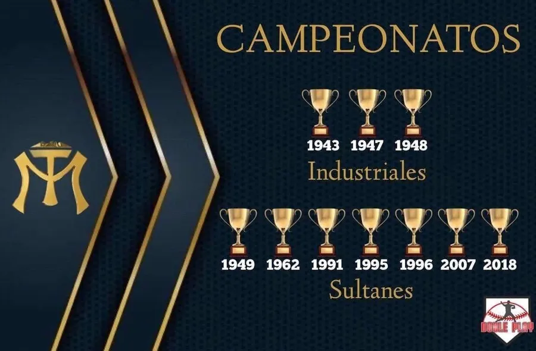
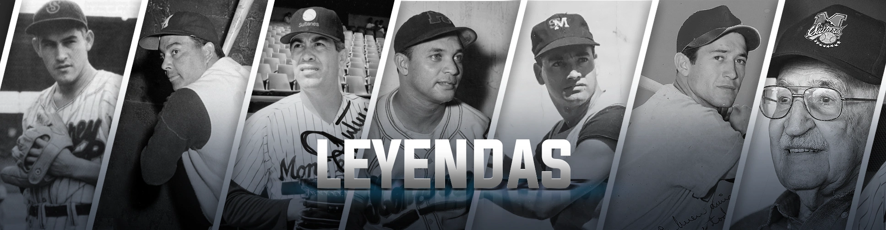

Diez campeonatos
Los Sultanes tienen 10 títulos de la Liga Mexicana de Beisbol, más que cualquier otro equipo del norte. Los primeros los ganaron cuando el club todavía se llamaba Industriales, y el más reciente llegó en 2018.

Los Sultanes tienen 10 títulos de la Liga Mexicana de Beisbol, más que cualquier otro equipo del norte. Los primeros los ganaron cuando el club todavía se llamaba Industriales, y el más reciente llegó en 2018.

Con el cubano Lázaro Salazar como mánager, Monterrey ganó en 1947, 1948 y 1949: el único tricampeonato en la historia de la LMB. El tercero lo sellaron al barrer en cuatro juegos a Unión Laguna. Salazar ya les había dado su primer título en 1943, y Epitacio "La Mala" Torres jugó en los cuatro.
El quinto título llegó con el cubano Clemente "Sungo" Carrera como mánager, en el primer año de Héctor Espino con los Sultanes: bateó 32 jonrones y produjo 105 carreras.
Ya en el Palacio Sultán, ganaron tres títulos en seis años y los tres contra los Diablos Rojos del México. En 1991, con Aurelio Rodríguez como mánager, ganaron en siete juegos. En 1995 los barrieron 4-0, con Miguel Flores como Jugador Más Valioso, y en 1996 repitieron en cinco juegos. Esos dos los dirigió el estadounidense Derek Bryant.
En 2007, con Félix Fermín, vencieron en siete juegos a los Leones de Yucatán, el equipo que les había ganado la final un año antes. En 2018 la liga jugó dos torneos y los Sultanes ganaron el de otoño: vencieron 4-2 a los Guerreros de Oaxaca con el panameño Roberto Kelly como mánager, y el tercera base Agustín Murillo fue el Jugador Más Valioso.
La más reciente fue la Serie del Rey 2024, que perdieron ante los Diablos Rojos del México.